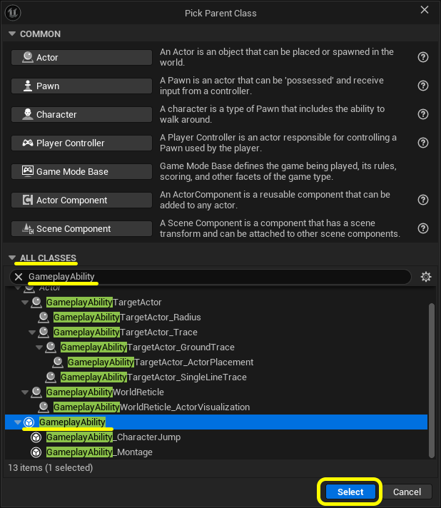
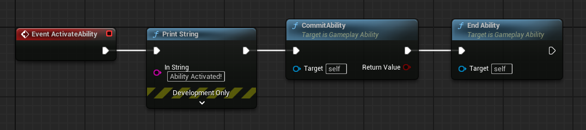
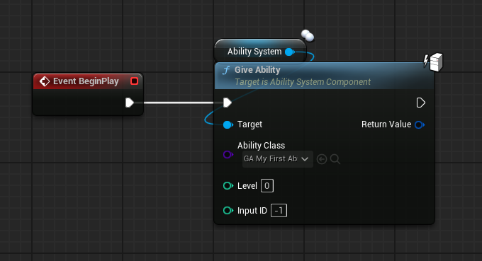
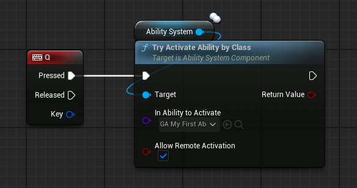

このステップのゴール
前のステップで GAS を使える状態になりました。 このステップではいよいよ「アビリティ」を作って動かします。 難しいことは後回しにして、まず「発動する」ところまで進めましょう。
- GameplayAbility ブループリントを作る
- 発動時にメッセージを表示する（動作確認のため）
- キャラクターにアビリティを持たせる
- キーを押したらアビリティが発動する
Ability ブループリントを作る
コンテンツブラウザの空白部分を右クリックして 「ブループリントクラス」 を選択します。
親クラスの選択画面（Pick Parent Class）が開くので、検索欄に GameplayAbility と入力します。
似た名前のクラスが複数表示されますが、GameplayAbility を選んで
Select（選択）をクリックしてください。

▲ UE 5.5 のスクリーンショット
ブループリントの名前は、今回は GA_MyFirstAbility にしました。
GAS 関連のアセットは接頭辞で種類がわかるように命名するのが一般的です。GameplayAbility は GA_ のように付けます。
Event ActivateAbility ノードから以下のようにつないでください。
右クリックでノードを検索・追加できます。
In String: "Ability Activated!" → Commit Ability → End Ability

▲ UE 5.5 のスクリーンショットブループリントをコンパイルして保存してください。
GameplayAbility の基本構造
Step 2 で組んだノードのそれぞれが何をしているか確認しておきましょう。
アビリティが発動したときに最初に呼ばれる処理です。 「ジャンプする」「炎を出す」「回復する」など、アビリティの本体はここに書きます。
「MPを消費する」「クールダウンを開始する」といった処理を確定させます。 コストやクールダウンを設定していない場合でも、呼ぶ必要があります。
アビリティの処理が終わったら必ず呼びます。 これを呼ばないと GAS がアビリティを「まだ実行中」と認識し続けるため、 同じアビリティを再度発動できなくなったり、クールダウンが始まらなかったりします。
ActivateAbility → やりたい処理 → CommitAbility → EndAbility、という流れが基本です。
キャラクターに Ability を持たせる
GAS では「キャラクターが持っているアビリティの一覧」を AbilitySystemComponent が管理しています。 アビリティを発動するには、まず Give Ability（ギブアビリティ） で キャラクターにアビリティを登録する必要があります。
BP STEP 02 で AbilitySystemComponent を追加したキャラクターのブループリントを開いてください。
サードパーソンテンプレートの場合は
Content/ThirdPerson/Blueprints/BP_ThirdPersonCharacter です。
サードパーソンキャラクターには Event BeginPlay が最初から配置されていないため、
新しく用意します。イベントグラフの空白部分で P キーを押しながら左クリックすると
Event BeginPlay ノードが配置されます。
以下のようにノードをつないでください。
Ability Class: GA_MyFirstAbility
グラフの空白部分を右クリックして Give Ability を検索・配置すると、
Target ピンに AbilitySystem コンポーネントが
自動的につながった状態で出てきます。つながっていない場合は手動で接続してください。
Give Ability の Ability Class に
GA_MyFirstAbility を設定します。

▲ UE 5.5 のスクリーンショットGive Ability は FGameplayAbilitySpecHandle という値を返します。これは「このアビリティを識別するID」で、後で特定のアビリティを取り消したいときに使います。今は無視してかまいません。
キーを押して Ability を発動する
同じキャラクターのブループリントで、キーボードイベントを追加します。
グラフの空白部分を右クリックして Q キーのイベントを追加してください
（Keyboard Events（キーボードイベント） → Q）。
In Ability to Activate: GA_MyFirstAbility
Try Activate Ability By Class の Target にも、
Step 4 と同様に右クリックで検索・配置すれば AbilitySystem が
自動的につながります。つながっていない場合は手動で接続してください。
発動したい Ability は In Ability to Activate に
GA_MyFirstAbility を設定します。
Allow Remote Activation はデフォルトの ON のままで構いません。

▲ UE 5.5 のスクリーンショット
Try Activate Ability By Class は、指定したクラスのアビリティを
発動しようとするノードです。
発動の条件（コスト・クールダウンなど）を満たしていれば発動し、
満たしていなければ何もしません。
ブループリントをコンパイルして保存してください。
動作確認
エディタ上部の Play（プレイ）ボタン を押してゲームを開始します。
Q キーを押すと、画面左上に
"Ability Activated!"
というメッセージが表示されれば成功です。
Q を押すたびにメッセージが出ることを確認してください。
このチュートリアルは UE 5.5 で動作確認しています。別バージョンをお使いの場合は UE 5.5 で試してみてください。
このステップのまとめ
GameplayAbility の基本的な流れが完成しました。
「Give Ability で登録 → Try Activate Ability By Class で発動」
という2ステップが GAS の基本パターンです。
現在のアビリティは Print String するだけですが、 この枠組みの中にどんな処理でも入れられます。 次のステップでは GameplayTag を使って 「スタン中はアビリティを発動できない」という制御を実装します。